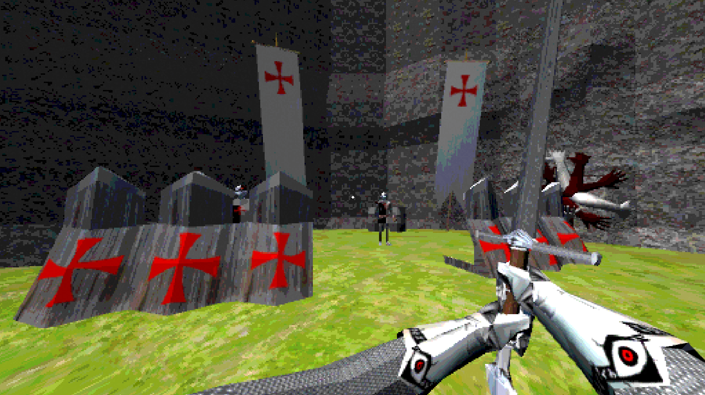
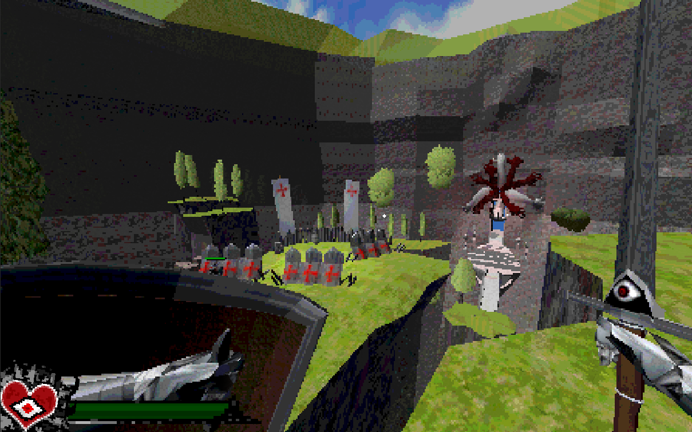
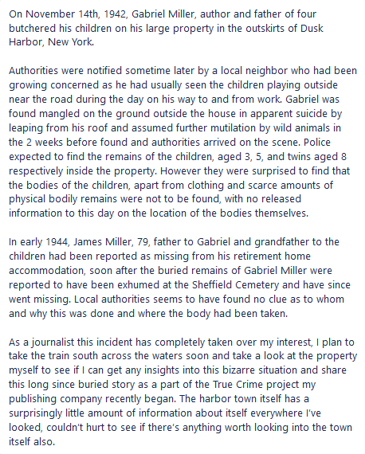

This is a collection of projects and assets
I'm currently working on
* Updated 11/23/2020 *
The Last Mageknight
This is the evolution of a small action game concept I started working on. the below video is the latest state
First, I wanted to get an idea for the setting as well as basic use of animation and first-person arms, which i've never done.
colliders for weapons and a basic health system were implemented near the start as well.
I would add an environment and start creating character models and UI. This uses
a Playstation 1 style shader that jitters the faces of meshes. I also would
create each model you see myself in blender, using textures from freetextures.com
where I would then downscale them to 256x256 or even lower.

Finally up to about 4 weeks ago before I stopped, I did away with the
two-handed sword and changed it out for a smaller sword version i edited from the
large one and then a new shield model as well as animations.

DUSK HARBOR
This is a small environment project I made for a horror game idea. It had probably been a year since I did anything gamedev related apart from
coursework and tutorials, and I decided I wanted to get more into modeling. This game also uses a PSX style shader and downscaled res textures with
a point filter. The models were all made in blender and the textures came from freetextures.com
This is the written premise of the game, if i ever get around to working on it again!

Seapunk: User Request
This render was made using Processing 3 and made for learning purposes.
I asked anonymous user on an internet forum what to make and returned with this.
I personally encourage using Processing 3 as a platform for learning programming if you are interested.
The model, background, and music were found at random online. The pink waves
are made with a plane that uses Perlin noise. The YouTuber Coding Train has a good tutorial on this concept.
Project Aegis: Cover Document
Project Aegis is my idea for a full-size game, and will be used
as a platform for learning skills and getting experience.
Ive worked on this on and off for about a month, its been in hibernation
as an idea since i starte college and will probably remain that way until
I have significantly more free time to work.
Zealot Tank (Model)
This idea came from Ghost in The Shells' Spider Tank, or Think Tank.
The weird combination of a turtle, mech walker, and cyclops is basically just me learning modelling with Blender 3D,
i'd only ever made cups and tables before this point.